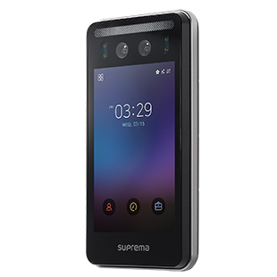
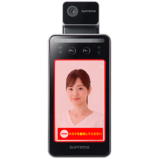
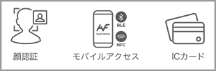

Device
suprema
SA-FSF2-DB / 顔認証ターミナル
Supremaの独自のフュージョンマッチング技術は、クラス最高の顔認識の精度と偽造顔検出機能を提供します。 ディープラーニングアルゴリズムに基づいて、肌の色や表情の変化に関係なく、円滑な顔認識が可能です。
オフィス、工場、フィットネスジム、イベント会場など様々なシーンで活用可能。
商品の特長
ニューノーマル時代の
新スタンダード非接触ソリューション
＊認証方式:顔/ カード
＊顔認証 1:1 または 1: N
＊任意の皮膚温度測定の設定が可能
＊顔認証検知距離:0.5m ~ 1.3m
＊顔認証
＊プロフィール写真のアップロードを通じた遠隔ユーザー登録
＊専用サーマルカメラとの連動で体表面温度の測温と本人認証 を同時に実行
＊最大ユーザー数(1:N):50,000(顔のみで運用の場合)
＊最大ユーザー数(1:N):100,000(カードのみで運用の場合)

強固なデバイスのセキュリティとデータの暗号化
＊セキュアブートによる最高レベルのデバイスセキュリティ
＊生体情報を含めたすべてのユーザー情報を暗号化処理

多様な認証を支援
＊顔認証 / ICカード / モバイルアクセス

仕様
| 規格 | 認証方式 | 顔 / カード / モバイル |
|---|---|---|
| RFオプション | 125kHz EM/13.56MHz MIFARE/DESFire/DESFire EV1/ FeliCa | |
| モバイル | NFC, BLE | |
| 一般 | CPU | 1.8GHz デュアルコア+ 1.4GHz クアッドコア |
| メモリ | 16GB Flash + 2GB RAM | |
| LCDタイプ | 7インチ カラー タッチパネル | |
| LCD解像度 | 800×1280 ピクセル | |
| カメラ | 2M ピクセル | |
| 防水性能 | IP65 | |
| 動作温度/湿度 | -20°C~50°C / 0%~90% 但し結露なきこと | |
| 寸法(WxHxD、mm) | 119.8 × 223 × 23.5 | |
| 重量 | 端末本体:585g ブラケット:181g(ワッシャーとボルトを含む) | |
| 電源 | 電圧:DC 12~DC 24V 電流:最大2.5 A | |
| 顔認証 | 認証速度 | 0.5秒以下 |
| 認証距離/高さ | 0.5m ~ 1.3m / 140cm ~ 190cm | |
| 偽造顔検知 | サポート | |
| 容量 | 最大ユーザー数(1:1) | 100,000 |
| 最大ユーザー数:(1:N) | 50,000:顔認証 100,000:カード認証 | |
| アクセスログ | 5,000,000(テキスト)、50,000(画像) | |
| インターフェイス | イーサネット | 10/100Mbps auto MDI/MDI X |
| RS-485 | 1ch Master/Slave( 切替式) | |
| Wiegand | 1ch Input/1ch Outpu(t 切替式) | |
| リレー | 1リレー | |
| タンパー | サポート |